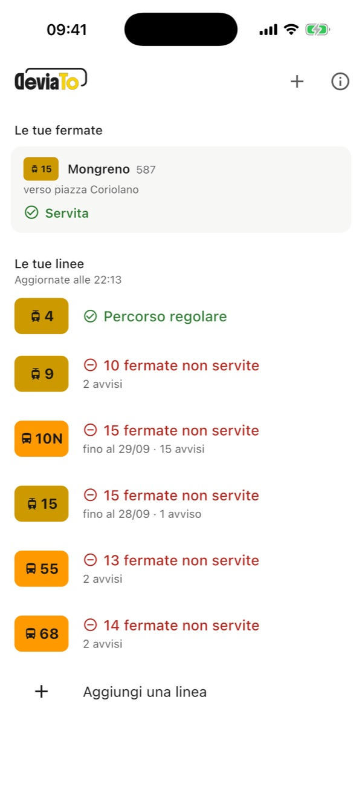
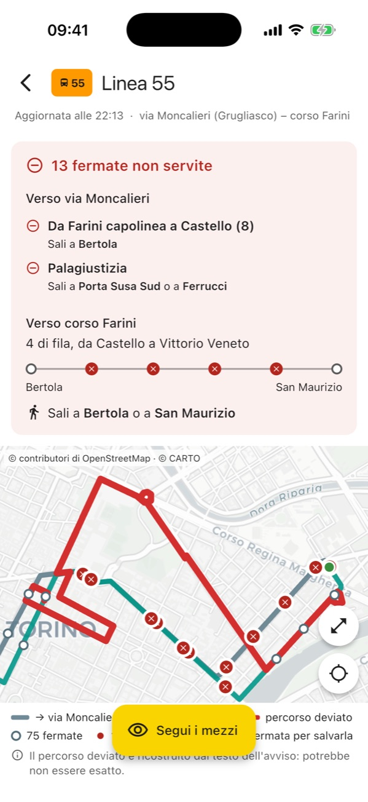
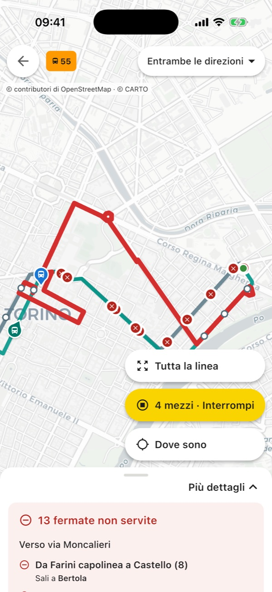

La tua fermata è ancora servita?
Un cantiere, una strada chiusa, una manifestazione: quando GTT devia un bus o un tram, l'avviso ufficiale è un lungo elenco di vie difficile da seguire a mente mentre aspetti alla palina. DeviaTo legge gli avvisi per te, disegna il nuovo giro sulla mappa e risponde all'unica domanda che conta: se il tuo mezzo passa ancora da lì o a quale fermata vicina ti conviene andare.
Presto su App Store e Google Play
Gratuita, senza pubblicità e senza registrazione.
- Vibò1410sali qui
- Largo Giachino Sud422, non servita
- Verolengo1758, non servita
- Brin1760, non servita
- Mortara1762, non servita
- Treviso1764, non servita
- Umbria2170, non servita
- Regina Margherita1911, non servita
- Industria193, non servita
- Principe Eugenio2174, non servita
- Statuto Nord373sali qui
avvisi pubblicati da GTTSedici comunicati separati da aprire e confrontare, uno per ogni fermata sospesa nei due sensi.
la sintesi di DeviaToUn colpo d'occhio: nove fermate saltate di fila. Ti basta salire a Vibò o a Statuto Nord.
Come si usa
Copre tutta la rete di superficie GTT a Torino e cintura: tram e bus, linee urbane ed extraurbane.

1Tieni d'occhio le tue linee
Tocca + per aggiungere i bus e i tram che prendi abitualmente. Appena apri l'app vedi subito quali viaggiano regolari e quali hanno deviazioni in corso.

2Scopri subito dove salire
Per ogni direzione trovi l'elenco delle fermate non servite e l'alternativa più comoda sulla stessa linea. E se tocchi la tua fermata sulla mappa per salvarla, te la ritrovi sempre in cima alla schermata principale.

3Segui i mezzi dal vivo
Sulla mappa il tratto deviato spicca in rosso. Con «Segui i mezzi» vedi muoversi i bus in tempo reale: se tornano a passare lungo il tracciato normale, capisci al volo che la deviazione è già rientrata.
Meno elenchi di vie, più chiarezza
Come ricostruiamo i percorsi
Negli avvisi ufficiali GTT descrive le deviazioni a parole, elencando le vie una dopo l'altra e dando spesso per scontato il punto esatto in cui il mezzo lascia la linea o ci rientra. DeviaTo incrocia questi testi con la mappa di Torino per tracciare il percorso più plausibile: quando deve dedurre qualche passaggio te lo segnala con l'etichetta «Da confermare», lasciandoti sempre il testo originale di GTT a portata di mano.
I tuoi dati restano tuoi
L'app si usa senza account e non raccoglie dati personali né statistiche di utilizzo. La posizione GPS ti viene chiesta solo se vuoi orientarti sulla mappa e non lascia mai il tuo telefono. Anche questo sito è totalmente privo di cookie: trovi tutti i dettagli nella pagina dedicata alla privacy.
Domande frequenti
È un'app ufficiale di GTT?
No, è un progetto indipendente nato a Torino e non ha alcun legame con GTT. Utilizza i dati aperti che l'azienda mette pubblicamente a disposizione. Trattandosi di una rielaborazione automatica, in caso di differenze fa sempre fede l'avviso ufficiale.
Quanto sono affidabili i percorsi ricostruiti?
Quando GTT sospende una fermata indicandone il codice numerico, l'informazione è certa. Quando invece descrive a parole il nuovo giro di vie, il tracciato viene ricostruito da DeviaTo: per trasparenza ogni deviazione porta un'etichetta chiara («Verificato» oppure «Da confermare») e in fondo alla schermata puoi sempre leggere l'avviso integrale di GTT.
Ogni quanto vengono aggiornati i dati?
Gli avvisi vengono controllati ogni mezz'ora durante il giorno, ogni ora la sera e più di rado nel cuore della notte. La posizione di bus e tram sulla mappa, invece, si aggiorna in tempo reale.
Manda una notifica se la mia linea cambia percorso?
Non ancora: al momento non ci sono notifiche automatiche, ma è il prossimo passo in programma. Per ora ti basta dare un'occhiata all'app prima di uscire per sapere subito se la tua fermata è regolare.
Hai notato un errore?
Se ti accorgi che DeviaTo segna come non servita una fermata da cui il bus passa regolarmente — o il contrario — fammelo sapere. Scrivimi la linea, la fermata e a che ora è successo: chi aspetta il mezzo in strada è il miglior alleato per correggere e affinare il sistema.
Scrivimi a devia.to@icloud.com